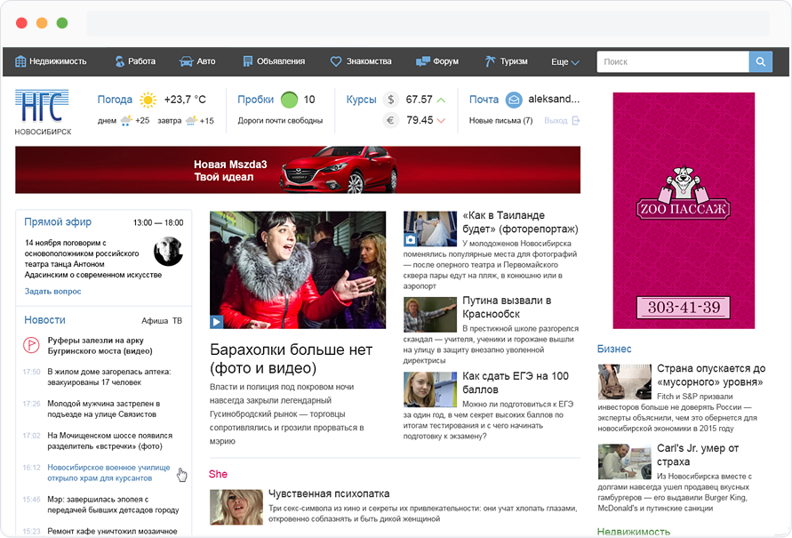

NGS.RU
Desktop and mobile products for the biggest regional online media in Russia. We evaluate our UX decisions through tests and key metrics.
Visit website


User interface designer from Russia with passion for great products, data visualization and cartography. I would like to show you some of my favourite projects.
Longread news story design. Stories of witnesses, archival photos and videos
Read full story in Russian
Working with complex data to reveal hidden patterns and provoke questions.
Reviews and recognition
The Village • Maps Mania • Information is Beautiful Awards Longlist
Awards and reviews
Admin panel for HR business needs for the leading recruiting site in Russia.
Visit website
Admin panel for HR business needs for the leading recruiting site in Russia.
Visit website
Preview your prototypes on any device with a web browser using the Mirror button. Or install Framer’s Android and iOS apps, for even quicker access.